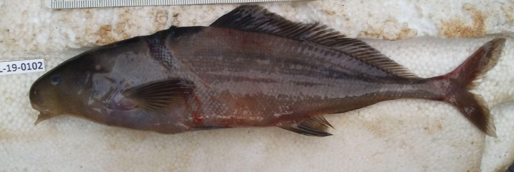

Systématique
- Ordre : Osteoglossiformes
- Famille : Mormyridae
- Genre : Myomyrus
- Espèce : M. pharao

Myomyrus pharao est un poisson benthique rare appartenant à la famille des Mormyridae, endémique du bassin du fleuve Congo. Décrit par Poll en 1954, il se distingue par la structure particulière de sa tête et son mode de vie lié aux eaux profondes ou à courant soutenu.
Il peut atteindre une longueur totale d'environ 25 à 30 cm. Comme tous les Mormyridés, il possède un cervelet extrêmement développé et un organe électrique situé dans le pédoncule caudal qui lui permet de s'orienter et de communiquer dans l'obscurité ou les eaux turbides. Son corps est allongé et comprimé latéralement, avec une coloration généralement grisâtre à brun sombre, parfois ardoisée.
Sa morphologie buccale est adaptée à la recherche de nourriture dans le sédiment : sa bouche est petite, terminale, et située à l'extrémité d'un museau court mais robuste. Contrairement à d'autres genres de la famille, le genre Myomyrus possède une nageoire dorsale beaucoup plus courte que la nageoire anale.
Myomyrus pharao est une espèce principalement nocturne et lucifuge. Durant la journée, il reste caché dans des anfractuosités, sous des racines ou dans des zones d'ombre profonde. C'est un poisson territorial envers ses congénères, utilisant ses décharges électriques (EOD - Electric Organ Discharge) pour délimiter son espace et interagir socialement.
En raison de ses capacités d'électrolocalisation, il est capable de détecter de minuscules proies enfouies dans le substrat. C'est une espèce plutôt solitaire qui demande une eau particulièrement riche en oxygène et une faible teneur en nitrates. Son comportement en captivité reste très peu documenté car l'espèce est rarement importée.
Mode : Aucune information précise disponible sur les modalités de reproduction en milieu naturel ou en captivité.
Comme la majorité des Mormyridés de rivière, on suppose qu'il s'agit d'un pondeur sur substrat ou dans les zones inondées durant la saison des pluies. Les signaux électriques jouent probablement un rôle crucial dans la parade nuptiale et la reconnaissance des partenaires. Aucun cas de reproduction en aquarium n'a été rapporté de manière fiable à ce jour.
Dimorphisme sexuel : Aucune information externe flagrante ne permet de distinguer les sexes, bien que chez certains Mormyridae, la forme de la nageoire anale ou la fréquence des décharges électriques puissent varier entre mâles et femelles matures.
Espérance de vie : Inconnue en milieu sauvage, probablement 5 à 10 ans pour des espèces de taille similaire en captivité.
Cette espèce fréquente les eaux du bassin moyen et supérieur du fleuve Congo. On la trouve préférentiellement dans les zones où le courant est présent et où le fond est composé d'un mélange de roches, de sable et de débris organiques.
L'eau dans son habitat naturel est généralement douce, légèrement acide à neutre, et présente une conductivité assez basse. Le biotope est caractérisé par des zones de forêts inondées ou des lits de rivières ombragés où la visibilité est souvent réduite.
Répartition

Origine naturelle :
- Afrique : Bassin du fleuve Congo.
- Localisation : République Démocratique du Congo (RDC).
- Distribution restreinte aux zones fluviales du bassin central.
Espèce rare et peu capturée, ses populations ne sont pas considérées comme menacées dans l'immédiat du fait de l'immensité de son habitat, mais les données restent fragmentaires.
Paramètres de maintenance
Température : 23 à 27 °C.
pH : 6,0 à 7,2.
GH : 3 à 10 °dGH.
Courant : Modéré ; nécessite une filtration puissante et une eau très propre.
Volume conseillé : Minimum 400-500 litres en raison de sa taille adulte et de sa sensibilité. Substrat de sable fin obligatoire pour protéger ses organes sensoriels buccaux.
Régime alimentaire
Régime : Carnivore insectivore et benthophage.
Se nourrit principalement de larves d'insectes, de petits vers (tubifex, vers de vase) et de petits crustacés aquatiques qu'il débusque dans le sol.
En aquarium, il peut être difficile à acclimater au sec ; les nourritures surgelées ou vivantes distribuées après extinction des feux sont préférables pour assurer une alimentation correcte.